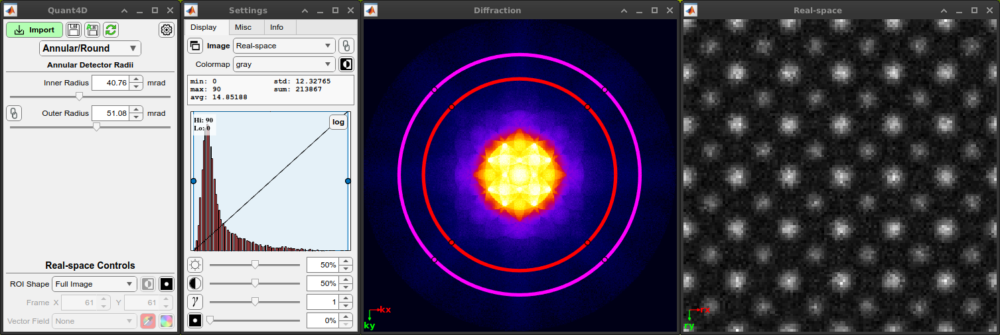
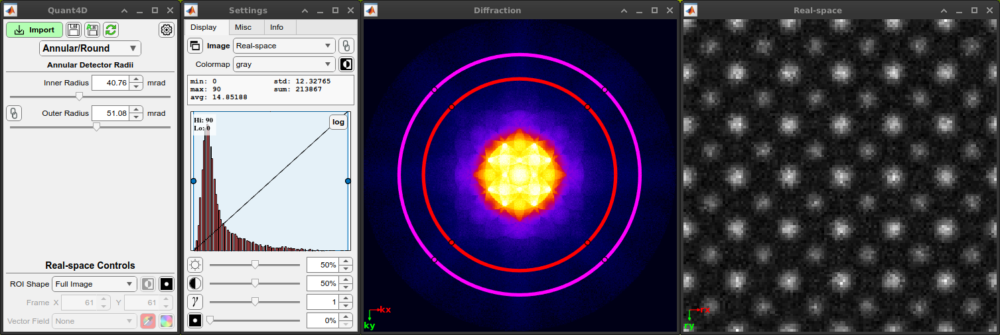

Welcome to the Quant4D documentation
Quant4D is an open source graphical interface for quickly and intuitively opening, interacting with, and performing basic analysis of 4D-STEM data.
Quant4D is an open source graphical interface for quickly and intuitively opening, interacting with, and performing basic analysis of 4D-STEM data.
